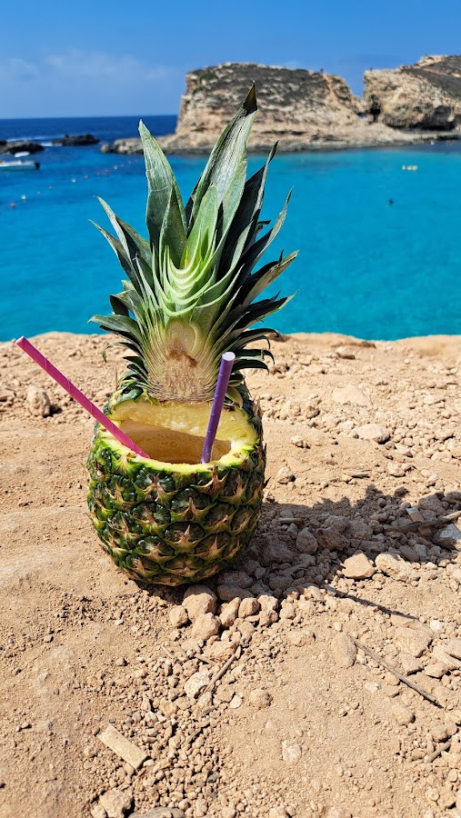

Malta is a place worth visiting all year round, with good weather even in the cold months - compared to other European cities which are freezing in the winter, here you can still find temperatures above zero even in the colder months. But since we were - again - limited by school vacations, we decided to visit in the summer, so for us the focus was on the beaches. And believe me, there are enough beaches to keep you busy for the whole summer.
Unfortunately we didn’t”t have the whole summer, but about ten days to explore the island. We decided to take it slow and concentrate on the north shore - best for beaches and we heard also best for families. The temperatures during the day were sometimes close to 40 degrees so, since travelling with a child, we based our activities on being close to the water. The good news is that here you have plenty of ways to escape the heat as you will see below.
Our first view upon arriving in MaltaWe arrived early and took an Uber to our Airbnb in the north of Malta, the ride took about 30 minutes and cost about 30 euros which was totally worth it. We were very tired having travelled in the middle of the night but excited to explore. So after a quick nap we headed to Għajn Tuffieħa. We took an Uber again - too hot for the bus - and as soon as we got off I was impressed by the view. The beach is at the bottom of a steep cliff and there is a nice photo spot with swings on the top. Going down the stairs you easily get to the golden sand and the blue sea… We spent many hours here, there were some waves but our son likes it and I found he beach child friendly (but not indicated for very small kids maybe, also not very accessible if you come with a stroller). There are also not many spots on the shade so either bring or rent an umbrella.
We bought our own umbrella on the first day and used it during the whole trip - I think it was a better deal than renting, specially because there seemed to be some stress going on among the people who rented them, I actually saw them fighting once and screaming a at each other a few times at other beaches… There are places to buy your own umbrella as well as other “last-minute-beach-appliances” right next to the paring lot / bus stop. There was also a stand selling Colombian food (the empanadas were great) and the bar Singita is right next to the beach and famous as a sunset hot spot.
Feeling welcomedThis is a place that you will not find under Top 10 List of things to do in Malta but we were staying so close to it that we had to check it out: the Xemxija Hill Heritage Walk. We chose the sunset time because it was the only bearable time to take the walk in the hills - temperatures were cooling down getting to 23, 25 degrees at night. Fun fact: I was surprised that we were not attacked by mosquitoes even though I forgot to bring repellent. So, the heritage walk of Xemxija offers beautiful views of the bay and the city as you walk through ancient sites and ruins. It is free to enter but not really well maintained, it is only worth if you are around the area like we were.
 A neglected but still beautiful path in the North of Malta
A neglected but still beautiful path in the North of Malta
Malta’s sister island Gozo, is just a short ferry ride away and definitely worth a visit. There are many tourism agencies offering tours for all day but we decided to take a bus to the ferry terminal and cross with the ferry since we were not far from Cirkewwa Ferry Terminal. The ferry is quite huge and offers a privileged view of the island when arriving, you just have to go outside. It was highest season but not too crowded and we could enjoy the wind and the views from the deck - without paying for a tour and free to move around at our own pace. There are for sure many things to see in Goo and I could imagine spending a whole vacation there, exploring the island, but we only had one day so we chose Rambla Bay.
 Arriving in Gozo, view from the Ferry
Arriving in Gozo, view from the Ferry
This beach has an incredible golden sand with very clear waters. It is rocky and wavy as it is on open sea and it gets windy. If you have a bigger kid who likes the waves like mine - he actually finds the flat sea boring - then I recommend. And if you are travelling without kids or with teens there is also a longer path you can take to a beautiful cave which offers amazing views from the top. We missed this one though cause we just wanted to relax at the beach.
We also had lunch at one of the few restaurants which are right next to the beach, I only saw two but I guess you can’t go wrong here as both seemed to have a similar menu with mostly meat and seafood options, there is also salad and dessert of course. Nothing super special so I didn’t mark the name of the restaurant, but it was simple, good food with a great beach view and fresh sea breeze. There are also some showers next to the restaurants and a wooden path that leads to the beach. There are some banks outside with shade from the trees which are quite nice for a pic Nic if you are lucky to get a spot.
Rambla Bay in Gozo, less crowded and simply beautifulOf all the beaches we went this was the less crowded and the one that looked more “wild” or less “touristic”, but that was a personal feeling. I was not disappointed and would recommend that, if like me, you only have one day in Gozo you choose Rambla Bay as the beach-to-go.
If there is one thing you can’t miss when visiting Malta, specially in warm months, it is a boat trip to the Blue Lagoon. This time we booked online a full day excursion to just relax and enjoy: it was a day to never be forgotten.
The day started early as we had to be on time at the meeting point, directly by the boat on St Paul’s Bay. We chose a smaller boat from a Maltese family, but there are all types of boats including bigger ones with slides or more with a party vibe. We enjoyed the more chilled and relax vibe on our little boat - we just sat and relaxed enjoying the views while the guide explained a bit about the history of Malta and explained how the tour would be.
The first stop was directly at the lagoon where we chose to spend almost all day - some people preferred to go to Gozo from there, therefore staying only one hour at the lagoon, but we like to take things slow… The first impression is that the name really makes sense. The water is blue the whole way but when you get there it changes to a type of blue that I had never seen with bare eyes. So clear and bright it almost shines, it’s like a dream.
As we got off the boat the place was packed with people - which was expected - so we walked along the crowds to find something to eat and drink. There is a line of stands on top of the rock that circles the lagoon and in summer they are all full, but still we managed to get some food and I ordered a delicious and beautiful Pina colada - inside a real pineapple - which I bought was just the perfect drink for the moment (and looked great on pictures too).
But then it comes the best part: almost everyone is sitting or walking around the food and drink stands, but, if you walk a bit further on top of steep the hill (watch out: this is not for people with mobility issues) you can easily find a quiet space to enjoy the view. We found a cozy spot and took all that beauty in. Then we walked down - carefully, it is a steep rock - and then just through the rocks (there are some small stairs to get in and out of the water too) we just jumped into the water with our snorkels and the inflatable boat for my son.
The water here is deep, clean, almost transparent. We swam the whole way to the other side - it is narrow but deep, so only try this if you really can swim - and then we got to the other side of the lagoon. There was a tiny sand beach and a cave which we decided to cross swimming as well. My son at this point could swim well and there was lots of people doing the same so we realised It was safe. There are tons of beautiful fishes to see so we crossed the whole cave snorkelling and sometimes stopping gripping at the rock on the sides since the whole way is also very deep. The cave ends on open sea so we just took a look out and swam all the way back to the beach. It was not too long but a bit adventurous!
Then we relaxed a while at the sand bank and pulled our son on the the litte boat swimming next to it all the way back to where we left our bags - on top of the rocks. We didn’t worry about leaving our stuff there since we didn’t bring valuables and it seemed quite safe since everyone were tourists joining from their own boat trips. But again, that’s up to you to decide. I believe most people only stay on one side of the rock and not necessarily swim all the way to the other side. In the middle of the lagoon the boats cannot enter so it is not like you can get a boat there. Some people brought swim fins which I thought was a clever idea.